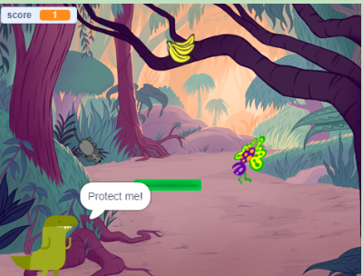
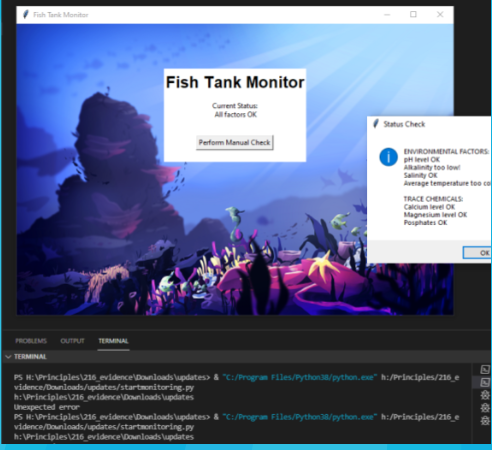
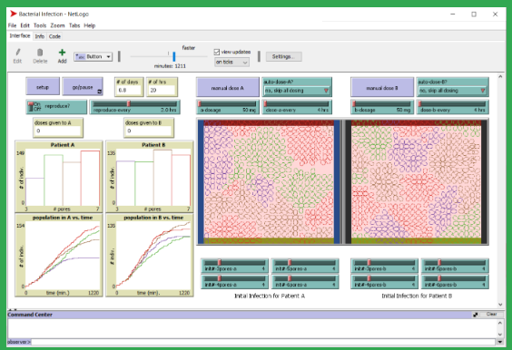
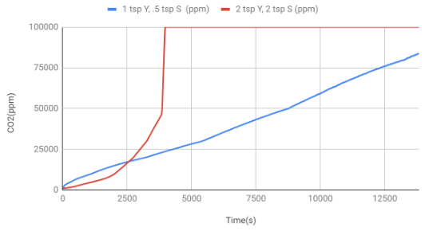

Home
Portfolio
About Me
This is my Portfolio Page!

First project.

This project simulates a cake factory. You can choose to order what flavor, how many layers, toppings, and writing that the cake will have. We used a lot of if statements and for loops in the code.
Second project.

This project is a 2 player platform game which is similar to tag. We press "G" to start the game. We use WASD and arrow keys to move the square. The terminal prints out each time the squares collide and there is a 3 second timer in which both squares turn red before going back to their original color.
Third Project

This project is an interactive game which focueses on saving the Character. The user needs to protect the character or else the game will end. The map will change a few times in the process until the game ends on the space map. Procedures, animations, counters, multiple backgrounds, costume changes sounds. and user input is used.
Fourth project

This project tracks chemical and environmental factors of the ocean such as alkalinity levels. We used different variables to keep track of the values and used if and else statements to check if the levels are too high or too low. We also used multi factor authentication to improve security and debugged to look for errors.
Fifth project

Sixth project

This project helps measure the amount of carbon dioxide compared vs time. The exponential red line represents the carbon dioxide increasing rapdily in 2 tsp y, 2tsp s(ppm) while the blue linear line represents the amount of carbon dioxide increasing more steadily in the 1 tsp Y, .5 tsp S(ppm).